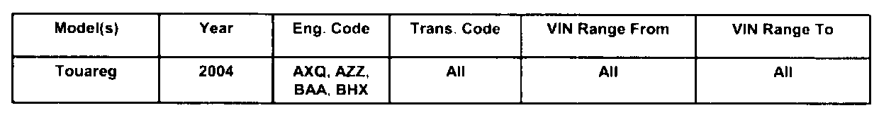
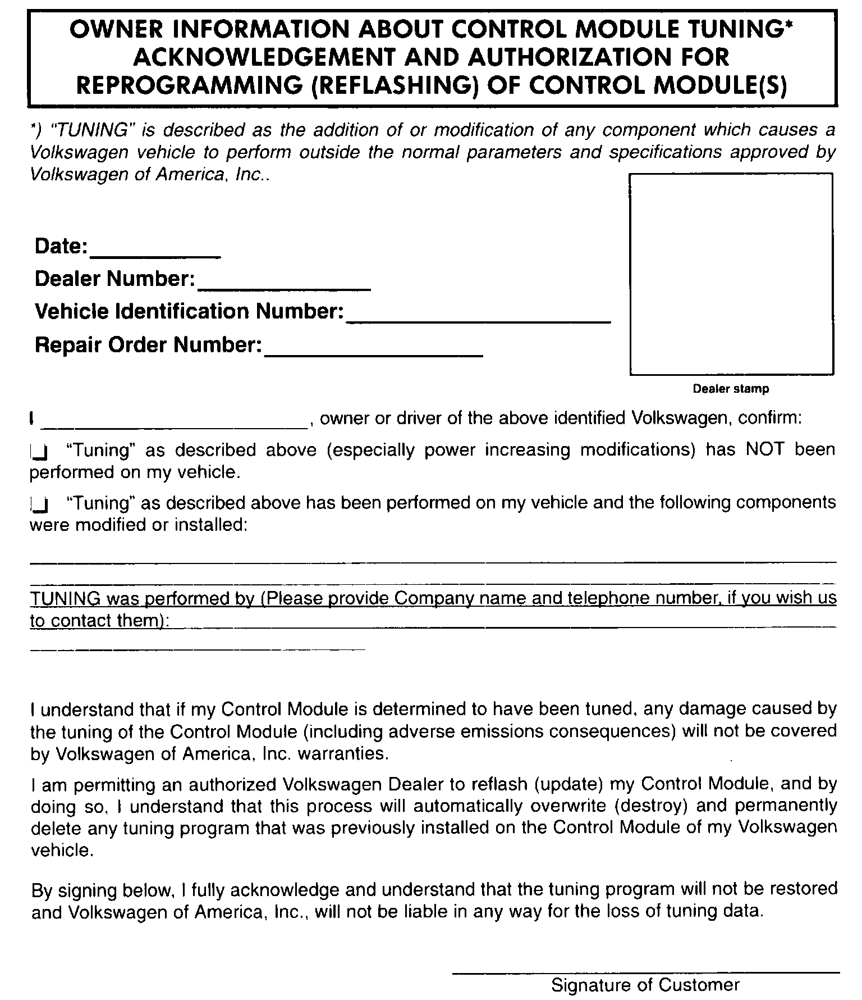
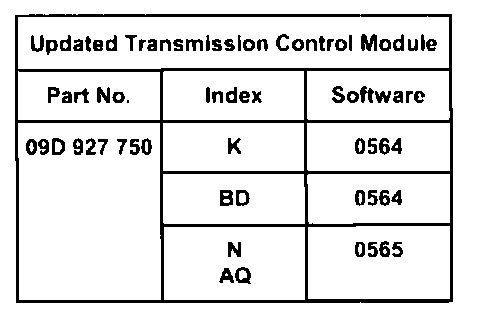
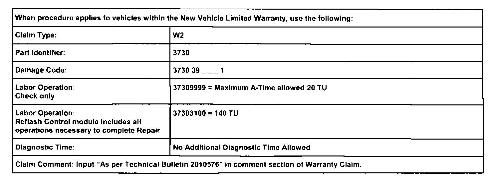
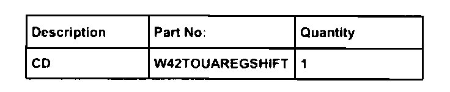

A/T Controls - Harsh/Jerky Shifting
01 07 05Jan. 16, 2007
2010576
Supersedes Technical Bulletin Group 01 numbered 04-13 dated June 21, 2004 due to inclusion into ElsaWeb.

Affected Vehicles
Condition
Update Programming (Flashing) Transmission Control Module (TCM) for Harsh Shifting
Technical Background
Updated TCM software that addresses:
For V6 Models (engine code AZZ, BAA) and V8 Models (engine code AXQ, BHX):
^ After extended highway driving a harsh 5th gear to 4th gear downshift is felt when slowing on an off-ramp.
For V8 Models (engine code AXQ, BHX) only:
^ In heavy traffic conditions, when slowing to approx. 5 MPH and then accelerating, vehicle goes into gear after a brief delay (customer perceives this as jerky shifting behavior).
Production Solution
Not Applicable
Service
PROCEDURE:
Transmission Control Module Update - Programming (Flashing)
Tip:
When performing the update programming procedure, ALL DTCs for all systems are erased. DTCs linked to Guided Fault Finding function tests will be lost. Therefore, always address stored DTCs for Customer concerns unrelated to the update programming procedure first.
The following "Update - Programming" (flashing) process may overwrite any "TUNED" TCM programming A "Tuned" TCM is described as any TCM altered so as to perform outside the normal parameters and specifications approved by Volkswagen of America, Inc.
If you encounter a vehicle with a "Tuned" TCM, prior to performing the "Update - Programming" (flashing) procedure:
Your Dealership should place the vehicle owner on notice in writing, that their TCM was found to have been tuned, and that any damage caused by the tuning of the TCM (including any adverse emissions consequences) will not be covered by Volkswagen of America, Inc. warranties.

For any repair requested by the owner under warranty or outside warranty that requires update programming, which will automatically wipe out the "Tuning" program, your Dealership should advise the owner of the above and get Owner's written consent (see Control Module Tuning form) to the update programming procedure.
Tool requirements
VAS 5051 or VAS 5052 (with Base CD V.10.01 and the Brand CD V.10.70.00 or higher).
"Update - Programming" (flashing) CD W42TOUAREGSHIFT
Tip:
Additional copies of the "Update - Programing" CD (Literature Number W42TOUAREGSHIFT) may be ordered from the Volkswagen Technical Literature Ordering Center.
Vehicle requirements
Battery MUST have minimum no-load charge of 12.5V (failure to maintain voltage during update process can lead to TCM failure) (use an approved battery charger INC940 to maintain battery voltage).
VAS 5051: connected to vehicle and to 110V AC Power supply at all times during procedure.
VAS 5052: connected to vehicle with battery voltage requirements met.
Any appliances with high electromagnetic radiation (i.e. mobile phones) switched OFF.
When performing the update programming procedure, ALL DTCs for all systems are erased.
DTCs linked to Guided Fault Finding function tests will be lost. Therefore, always address stored DTCs for Customer concerns unrelated to the update programming procedure first.
Tip:
Before update programming, delete the fault memory in the TCM. Update programming is not possible when an EEPROM fault is active.
Reprogram TCM with CD - Part number W42TOUAREGSHIFT
Insert the programming CD into the VAS 5051 / 5052 and access the TCM.
Tip:
If the update programming button does not appear, the latest version has already been installed to the level below
^ Programming starts by pressing the "Update Programming" button and following the on screen prompts.
^ Press the "Update Programming" button.
Tip:
Once update programming is complete, it is recommended to use 1001 - Compiling Services prompt to clear faults stored in various control modules.

Reset readiness code

Warranty

Required Parts and Tools
No Special Tools required.